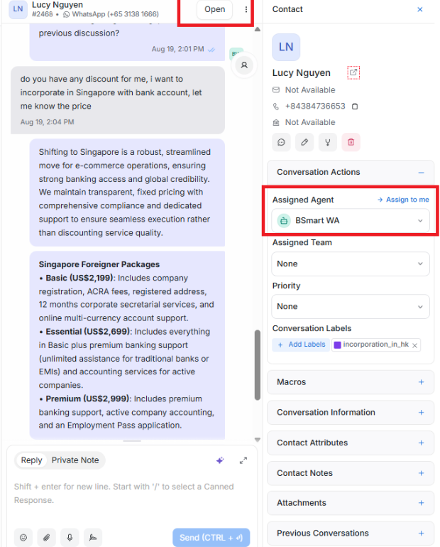
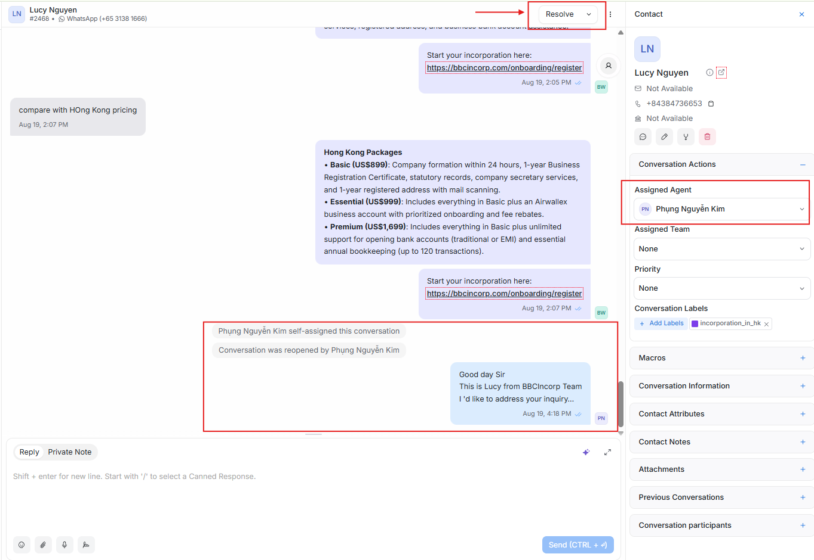
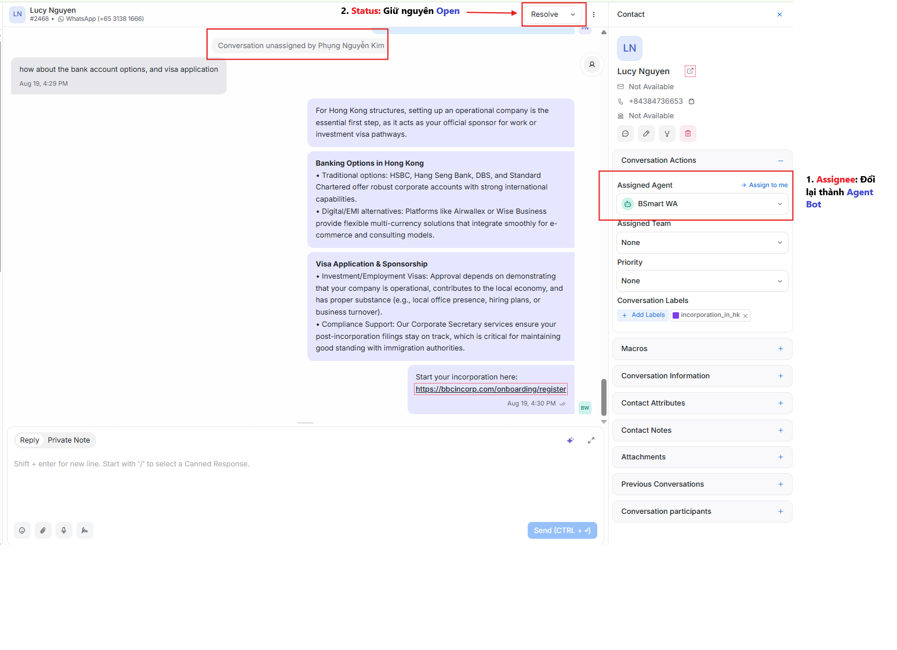
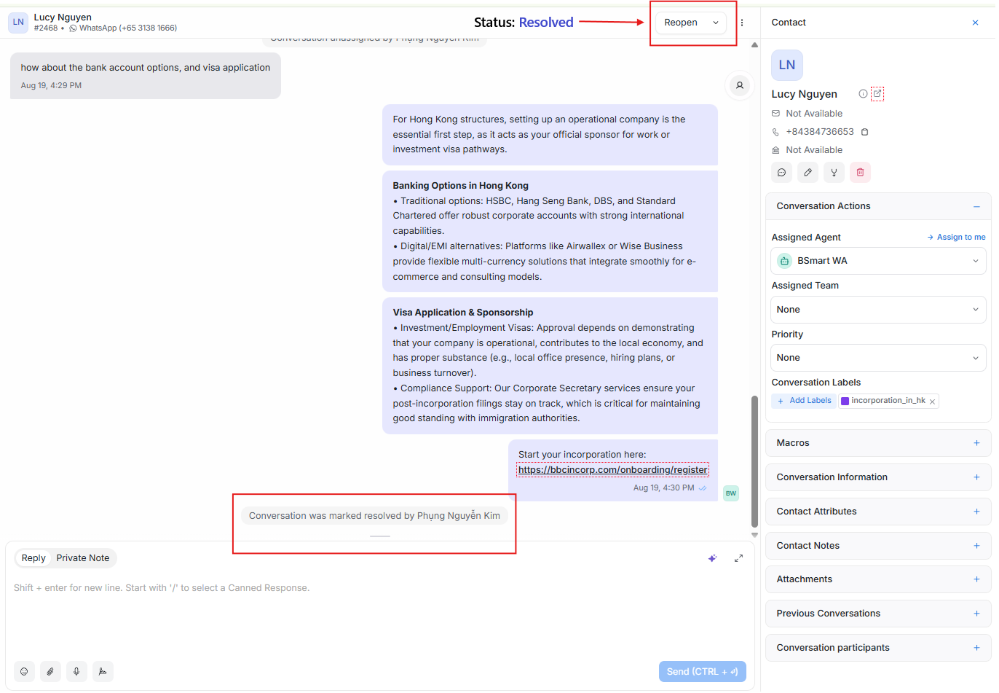
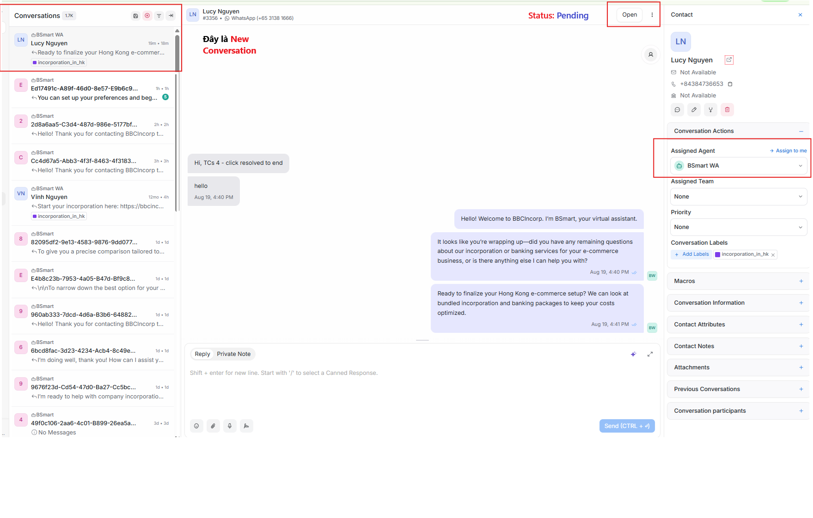

Cách CS Team chuyển hội thoại WhatsApp cho BSmart và nhận lại
Chỉ hai trường quyết định việc handoff. Mọi thứ khác đều suy ra từ đó.
Quyết định người thật hay bot phụ trách hội thoại.
Dành cho hội thoại mới vào.
Dành cho ca đang chạy cần người gánh.
Bốn tổ hợp bao trọn mọi hội thoại.
Khi khách gửi tin nhắn đầu tiên qua WhatsApp, Chatwoot đặt:

Khi ca cần CS xử lý, set cả hai trường:

Giữa hội thoại, chỉ đổi duy nhất một trường:

Khi yêu cầu của khách đã được giải quyết:

Nếu khách nhắn tin lại sau khi ca đã Resolved, Chatwoot tạo một hội thoại mới:

Gán tên bạn vào hội thoại và set Open, nếu không bot vẫn trả lời song song với bạn.
Hết ca mà vẫn để ca Open gán cho mình là để khách chờ. Hãy gán lại cho Agent Bot.
Resolved giữ hàng đợi sạch, và tin nhắn kế tiếp của khách tự mở lại luồng ở Pending.